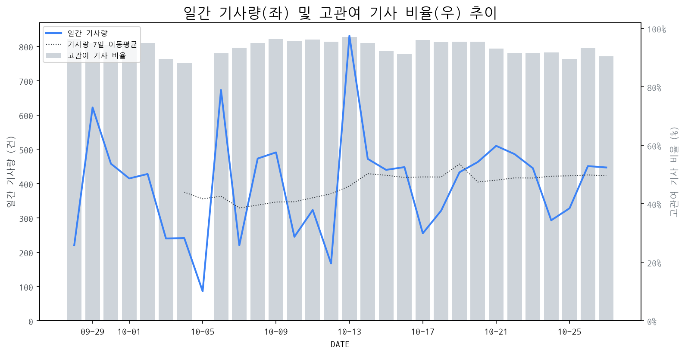

1
시장 활동 지표
기사량 추세 & 이상 징후 탐지
시장의 '전체 기사량'이 평소보다 비정상적으로 급증했는지(Spike)를 차트로 확인하고, LLM이 분석한 급등의 핵심 원인을 파악할 수 있음

고관여 기사란? 산업 연관 키워드로 수집된 기사들 중 디스플레이 키워드에 가중치를 반영하여 도출된 관련성 높은 기사
수집된 기사 수 (2026-10-27)
447
-3% WoW
기사량 변동 수준 (7일 이동평균 대비)
±6.7% 이하
2
오늘의 키워드
급격한 관심 ↑, 주목해야 할 키워드
1
삼성전자
+6.3σ
폴더블폰 확대 및 AI 기술 접목 소식으로 투자자 관심 집중
Related Metrics
금일 언급량: 37, 전일 대비: +19
Interpretation
폴더블 디스플레이 수요 증대 기대
Next Step
핵심 토픽 'Foldable_Display_Topic' 관련 신호입니다. 3번 섹션(키워드 감성분석)에서 해당 토픽의 감성 변동을 교차 확인하세요.
2
갤럭시
+3.7σ
갤럭시 폴더블폰 판매 호조, AI 기능 강화, 신제품 출시 루머 등이 복합적으로 작용했습니다.
Related Metrics
금일 언급량: 16, 전일 대비: +14
Interpretation
폴더블 수요 증가 신호.
Next Step
'갤럭시' 관련 상세 기사 및 경쟁사 반응 모니터링
3
아이맥
+2.7σ
애플의 신형 M6 칩 탑재 아이맥 출시 소식으로 AI 및 그래픽 성능 향상이 기대됩니다.
Related Metrics
금일 언급량: 7, 전일 대비: +6
Interpretation
향상된 디스플레이 수요 증가
Next Step
'아이맥' 관련 상세 기사 및 경쟁사 반응 모니터링
3
실시간 Risk 키워드
경계해야 할 시그널 탐지
특정 토픽의 부정 감성 점수가 급등할 때 이를 즉시 탐지하고, "근거 기사" 링크를 통해 리스크의 실체를 빠르게 파악할 수 있음
키워드 분석 결과, 오늘은 걱정할 만한 하락 신호가 없습니다. (부정 언급량 변화: +1.5σ 이내)
4
주요 이벤트 모니터링
실시간 산업 동향 파악을 위한 주요 활동
최근 발생한 주요 기업들의 신제품 출시, 투자 등 주요 이벤트를 제공하여 매일 경쟁사 동향을 확인할 수 있음
애플이 아이패드 미니에 OLED 디스플레이와 A20 Pro 칩을 탑재하여 성능을 대폭 향상시켰으나, 60Hz의 낮은 주사율로 인해 사용자들의 논란이 일고 있습니다. 이는 프리미엄 태블릿 시장에서 디스플레이 주사율의 중요성을 다시 한번 부각시키는 계기가 되었습니다.
Impact
OLED 디스플레이 채택 확대는 관련 부품 시장의 성장을 견인하겠지만, 60Hz 주사율 논란은 고주사율 기술의 중요성을 강조하며 시장 내 기술 경쟁을 심화시킬 수 있습니다.
Next Step
고주사율 기술 개발 및 적용을 가속화하여 차기 제품 경쟁력을 확보하고, 소비자들의 다양한 요구에 부응할 수 있는 디스플레이 솔루션을 제시해야 합니다.
중국 디스플레이 기업들이 TGV(Thin Glass Wafer) 유리기판까지 사업 영역을 확장하며 패키징 기술 자립화를 서두르고 있다. 이는 기존 디스플레이 제조 공정 및 기술 전반에 걸친 변화를 예고한다.
Impact
중국의 패키징 기술 자립화 가속은 디스플레이 부품 공급망 재편 및 글로벌 경쟁 구도에 영향을 미칠 수 있으며, 특히 반도체 후공정과의 융합이 중요해질 것이다.
Next Step
국내 디스플레이 제조 기업은 TGV 유리기판 관련 기술 동향을 면밀히 모니터링하고, 패키징 기술 경쟁력 강화 및 차세대 기술 확보를 위한 전략적 투자를 검토해야 한다.
반도체 칩 부족 현상인 '칩플레이션'으로 인해 전자 및 부품 업계가 원가 경쟁력 확보에 어려움을 겪고 있습니다. 이는 부품 공급망 불안정과 생산 비용 상승으로 이어지고 있습니다.
Impact
디스플레이 시장에서는 부품 수급 불안정 및 가격 상승으로 인해 패널 생산 단가가 높아지고, 이는 최종 제품 가격 인상으로 이어져 소비자 수요에 부정적인 영향을 미칠 수 있습니다.
Next Step
디스플레이 제조 기업은 장기적인 부품 공급 계약 확보, 대체 부품 발굴, 그리고 공정 효율화 및 자동화 투자를 통해 원가 경쟁력을 강화해야 합니다.